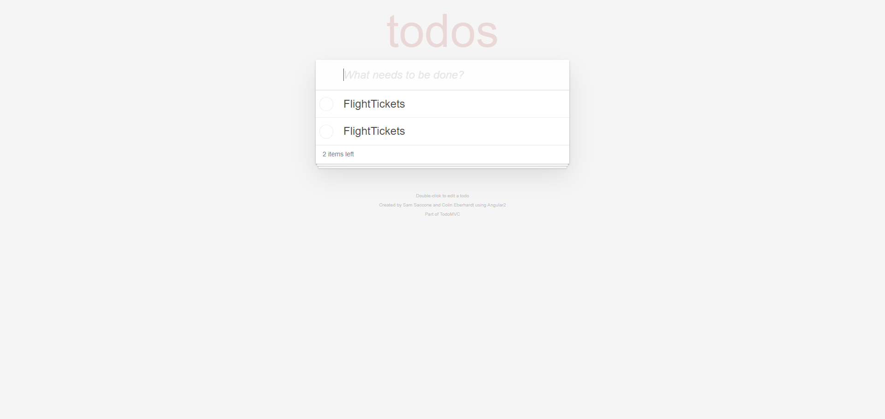

-
Validate Negative scenarios for the TODO app
22:09:07 / 00:00:20:191 Fail
Validate Negative scenarios for the TODO app
12.20.2023 22:09:07 12.20.2023 22:09:27 00:00:20:191 · #test-id=1FailCheck if duplicate tasks can be addedGiven User is on the ToDo app home pageThen Add tasks to the ToDo appTask rowid FlightTickets 1 FlightTickets 2 And Check if 2 Duplicate tasks are addedstepDefinitions.Hooks.addScreenShot(io.cucumber.java.Scenario)imagePassCheck if blank characters, spaces can be added to todo tasksGiven User is on the ToDo app home pageThen Add empty , input space tasks to the todo listAnd Check if task is not addedPassCheck Minimum and Maximum characters input to the todo appPassCheck Minimum and Maximum characters input to the todo appGiven User is on the ToDo app home pageThen Add tasks to the ToDo appTask rowid 1 1 FlightTicketsExamPreparations@1234$%^&(Laundry-Wash-CycleRepair-GROCERYSHOPPING!!!!! 2 And Mark the tasks as DoneThen Check if the tasks are marked Completed 2And User checks the count of tasks to be done 0PassRefreshing browser window holds the data enteredPassRefreshing browser window holds the data enteredGiven User is on the ToDo app home pageThen Add tasks to the ToDo appTask rowid Exams preparation 1 FlightTickets 2 Check !@$%^&* 3 And User refreshes the browsing windowThen User checks the count of tasks to be done 3Then Mark the tasks as DoneAnd User refreshes the browsing windowThen Check if the tasks are marked Completed 3Then User deletes all tasks 3And User refreshes the browsing windowAnd Check if tasks are deleted -
Validate Positive E2E scenarios & functionalities of the TODO app
22:09:27 / 00:00:30:216 Pass
Validate Positive E2E scenarios & functionalities of the TODO app
12.20.2023 22:09:27 12.20.2023 22:09:57 00:00:30:216 · #test-id=54PassValidate the UI , Header, InputBox & Footer linksPassValidate the UI , Header, InputBox & Footer linksGiven User is on the ToDo app home pageThen Add tasks to the ToDo appTask rowid Exams preparation 1 FlightTickets 2 Check !@$%^&* 3 1234567890 4 Groceries 5 When Page is loaded with the header "todos" title "Angular2 • TodoMVC"Then User checks inputbox is presentAnd User checks the footer notes links 4PassAdd tasks to the app and validate the count of tasks to be donePassAdd tasks to the app and validate the count of tasks to be doneGiven User is on the ToDo app home pageThen Add tasks to the ToDo appTask rowid Exams preparation 1 FlightTickets 2 Check !@$%^&* 3 1234567890 4 Groceries 5 Then User checks the count of tasks to be done 5PassCheck if the tasks can be deleted using cross buttonPassCheck if the tasks can be deleted using cross buttonGiven User is on the ToDo app home pageThen Add tasks to the ToDo appTask rowid Exams preparation 1 FlightTickets 2 Check !@$%^&* 3 1234567890 4 Groceries 5 Then User checks the count of tasks to be done 5Then User deletes all tasks 5And Check if tasks are deletedPassCheck if the tasks can be marked done using toggle buttonPassCheck if the tasks can be marked done using toggle buttonGiven User is on the ToDo app home pageThen Add tasks to the ToDo appTask rowid Exams preparation 1 FlightTickets 2 Check !@$%^&* 3 1234567890 4 Groceries 5 And Mark the tasks as DoneThen Check if the tasks are marked Completed 5And User checks the count of tasks to be done 0PassChecks if the tasks completed can be ClearedGiven User is on the ToDo app home pageThen Add tasks to the ToDo appTask rowid Exams preparation 1 FlightTickets 2 Check !@$%^&* 3 1234567890 4 Groceries 5 And Mark the tasks as DoneThen User clicks on Clear Completed buttonAnd Check if tasks are deletedPassCheck if a done task can be unchecked and change reflectsPassCheck if a done task can be unchecked and change reflectsGiven User is on the ToDo app home pageThen Add tasks to the ToDo appTask rowid Exams preparation 1 FlightTickets 2 Check !@$%^&* 3 1234567890 4 Groceries 5 And Mark the tasks as DoneThen User checks the count of tasks to be done 0And Mark the tasks as DoneThen User checks the count of tasks to be done 5
-
java.lang.AssertionError
1 tests
java.lang.AssertionError
1 failedStatus Timestamp TestName Fail 22:09:10 pm And Check if 2 Duplicate tasks are added Validate Negative scenarios for the TODO app.Check if duplicate tasks can be added.And Check if 2 Duplicate tasks are added
-
@UiCheck
1 tests
@UiCheck
1 passedStatus Timestamp TestName Pass 22:09:27 pm Validate the UI , Header, InputBox & Footer links Validate Positive E2E scenarios & functionalities of the TODO app.Validate the UI , Header, InputBox & Footer links -
@Positive
6 tests
@Positive
6 passedStatus Timestamp TestName Pass 22:09:27 pm Validate the UI , Header, InputBox & Footer links Validate Positive E2E scenarios & functionalities of the TODO app.Validate the UI , Header, InputBox & Footer linksPass 22:09:29 pm Add tasks to the app and validate the count of tasks to be done Validate Positive E2E scenarios & functionalities of the TODO app.Add tasks to the app and validate the count of tasks to be donePass 22:09:31 pm Check if the tasks can be deleted using cross button Validate Positive E2E scenarios & functionalities of the TODO app.Check if the tasks can be deleted using cross buttonPass 22:09:39 pm Check if the tasks can be marked done using toggle button Validate Positive E2E scenarios & functionalities of the TODO app.Check if the tasks can be marked done using toggle buttonPass 22:09:42 pm Checks if the tasks completed can be Cleared Validate Positive E2E scenarios & functionalities of the TODO app.Checks if the tasks completed can be ClearedPass 22:09:54 pm Check if a done task can be unchecked and change reflects Validate Positive E2E scenarios & functionalities of the TODO app.Check if a done task can be unchecked and change reflects -
@duplicateTasks
1 tests
@duplicateTasks
1 failedStatus Timestamp TestName Fail 22:09:07 pm Check if duplicate tasks can be added Validate Negative scenarios for the TODO app.Check if duplicate tasks can be added -
@Negative
4 tests
@Negative
3 passed 1 failedStatus Timestamp TestName Fail 22:09:07 pm Check if duplicate tasks can be added Validate Negative scenarios for the TODO app.Check if duplicate tasks can be addedPass 22:09:10 pm Check if blank characters, spaces can be added to todo tasks Validate Negative scenarios for the TODO app.Check if blank characters, spaces can be added to todo tasksPass 22:09:17 pm Check Minimum and Maximum characters input to the todo app Validate Negative scenarios for the TODO app.Check Minimum and Maximum characters input to the todo appPass 22:09:19 pm Refreshing browser window holds the data entered Validate Negative scenarios for the TODO app.Refreshing browser window holds the data entered -
@DeleteTasks
1 tests
@DeleteTasks
1 passedStatus Timestamp TestName Pass 22:09:31 pm Check if the tasks can be deleted using cross button Validate Positive E2E scenarios & functionalities of the TODO app.Check if the tasks can be deleted using cross button -
@refresh
1 tests
@refresh
1 passedStatus Timestamp TestName Pass 22:09:19 pm Refreshing browser window holds the data entered Validate Negative scenarios for the TODO app.Refreshing browser window holds the data entered -
@minmax
1 tests
@minmax
1 passedStatus Timestamp TestName Pass 22:09:17 pm Check Minimum and Maximum characters input to the todo app Validate Negative scenarios for the TODO app.Check Minimum and Maximum characters input to the todo app -
@ClearCompleted
1 tests
@ClearCompleted
1 passedStatus Timestamp TestName Pass 22:09:42 pm Checks if the tasks completed can be Cleared Validate Positive E2E scenarios & functionalities of the TODO app.Checks if the tasks completed can be Cleared -
@blankcase
1 tests
@blankcase
1 passedStatus Timestamp TestName Pass 22:09:10 pm Check if blank characters, spaces can be added to todo tasks Validate Negative scenarios for the TODO app.Check if blank characters, spaces can be added to todo tasks -
@DoneTasks
1 tests
@DoneTasks
1 passedStatus Timestamp TestName Pass 22:09:39 pm Check if the tasks can be marked done using toggle button Validate Positive E2E scenarios & functionalities of the TODO app.Check if the tasks can be marked done using toggle button -
@UnCheckDoneTask
1 tests
@UnCheckDoneTask
1 passedStatus Timestamp TestName Pass 22:09:54 pm Check if a done task can be unchecked and change reflects Validate Positive E2E scenarios & functionalities of the TODO app.Check if a done task can be unchecked and change reflects -
@AddTasks
1 tests
@AddTasks
1 passedStatus Timestamp TestName Pass 22:09:29 pm Add tasks to the app and validate the count of tasks to be done Validate Positive E2E scenarios & functionalities of the TODO app.Add tasks to the app and validate the count of tasks to be done
Started
Dec 20, 2023 10:09:05 pm
Ended
Dec 20, 2023 10:09:57 pm
Features Passed
1
Features Failed
1
Features
Scenarios
Steps
Timeline
Tags
| Name | Passed | Failed | Skipped | Others | Passed % |
|---|---|---|---|---|---|
| @UiCheck | 1 | 0 | 0 | 0 | 100% |
| @Positive | 6 | 0 | 0 | 0 | 100% |
| @duplicateTasks | 0 | 1 | 0 | 0 | 0% |
| @Negative | 3 | 1 | 0 | 0 | 75% |
| @DeleteTasks | 1 | 0 | 0 | 0 | 100% |
| @refresh | 1 | 0 | 0 | 0 | 100% |
| @minmax | 1 | 0 | 0 | 0 | 100% |
| @ClearCompleted | 1 | 0 | 0 | 0 | 100% |
| @blankcase | 1 | 0 | 0 | 0 | 100% |
| @DoneTasks | 1 | 0 | 0 | 0 | 100% |
| @UnCheckDoneTask | 1 | 0 | 0 | 0 | 100% |
| @AddTasks | 1 | 0 | 0 | 0 | 100% |